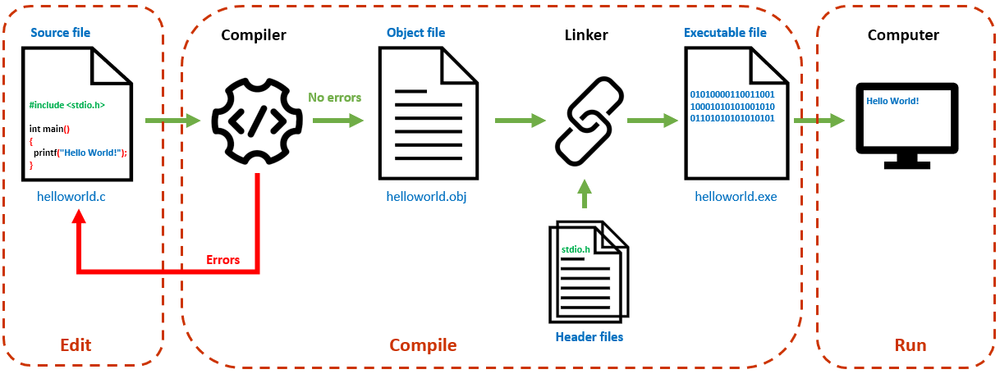

1 - Thiết lập môi trường lập trình C/C++
Mục tiêu:¶
- Xác định được quy trình tạo một chương trình máy tính
- Thiết lập được môi trường lập trình C/C++ thông dụng
- Tạo được chương trình đơn giản đầu tiên
1.1 - Các bước viết chương trình
1.1.1 - Viết mã nguồn (Edit)
1.1.2 - Dịch (Compile)
1.1.3 - Chạy (Run)
1.2 - Một số công cụ lập trình C/C++ thông dụng
First, solve the problem. Then, write the code. - John Johnson
1.1 - Các bước viết chương trình¶
Để giải quyết một bài toán bằng máy tính, đầu tiên cần xây dựng được giải thuật, sau đó sử dụng một (hoặc một số) ngôn ngữ lập trình để cài đặt giải thuật thành chương trình máy tính.
Có thể chia quy trình viết chương trình thành ba bước: viết mã nguồn (edit), dịch (compile) và chạy (run).

1.1.1 - Bước 1: Viết mã nguồn (Edit)¶
- Mã nguồn (source code) là những dòng lệnh được viết theo cú pháp của một ngôn ngữ lập trình cụ thể, chẳng hạn như C/C++, Java, Python,...
- Ở các ngôn ngữ lập trình bậc cao, các dòng lệnh được viết theo cú pháp gần gũi với ngôn ngữ tự nhiên, thường là tiếng Anh.
Ví dụ: Để in một thông báo lên màn hình, câu lệnh trong ngôn ngữ C như sau:
printf("This is a message");
1.1.2 - Bước 2: Dịch (Compile)¶
- Bước dịch (compiling) chuyển đổi mã nguồn (là các dòng lệnh con người hiểu được) sang mã máy (máy tính hiểu & thực thi được).
- Quá trình dịch được thực hiện bởi chương trình dịch (compiler).
- Nếu mã nguồn còn có lỗi cú pháp, chương trình dịch sẽ thông báo lỗi. Người lập trình cần quay lại Bước 1 để khắc phục hết các lỗi này.
- Nếu không còn lỗi cú pháp, trình biên dịch chuyển đổi file mã nguồn thành file mã máy có phần mở rộng là
.obj; sau đó liên kết với các thư viện liên quan để tạo thành file thi hành được trên máy tính (có phần mở rộng là.exe).
1.1.3 - Bước 3: Chạy (Run)¶
- Sau khi biên dịch thành công, file thực thi (executable file) có thể chạy trên máy tính.
- Chương trình chạy được không đồng nghĩa với chương trình chạy đúng.
- Chương trình cần chạy thử nhiều lần với các tình huống khác nhau của dữ liệu vào để phát hiện và khắc phục các lỗi logic (nếu có). Nếu còn lỗi, quay lại Bước 1 để khắc phục.
- Đa số công cụ lập trình C/C++ hiện nay đều tích hợp các chức năng soạn thảo mã nguồn, biên dịch, chạy và gỡ rối; vì thế chúng được gọi là môi trường phát triển tích hợp (Integrated Development Environment - IDE).
1.2 - Một số công cụ lập trình C/C++ thông dụng ¶
1.2.1 - Dev-C++¶
- Rất gọn nhẹ, đủ chức năng cơ bản & dễ sử dụng.
- Chỉ chạy trên Windows.
1.2.2 - Visual Studio Code¶
- Gọn nhẹ với nhiều tính năng cao cấp.
- Chạy trên Windows, macOS và Linux.